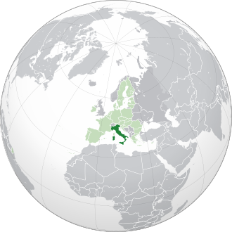
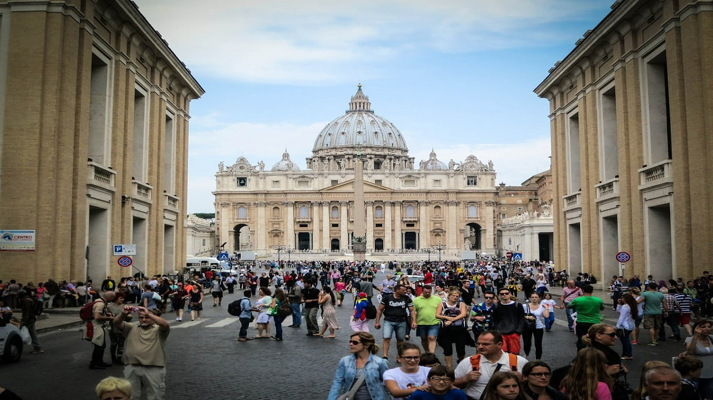
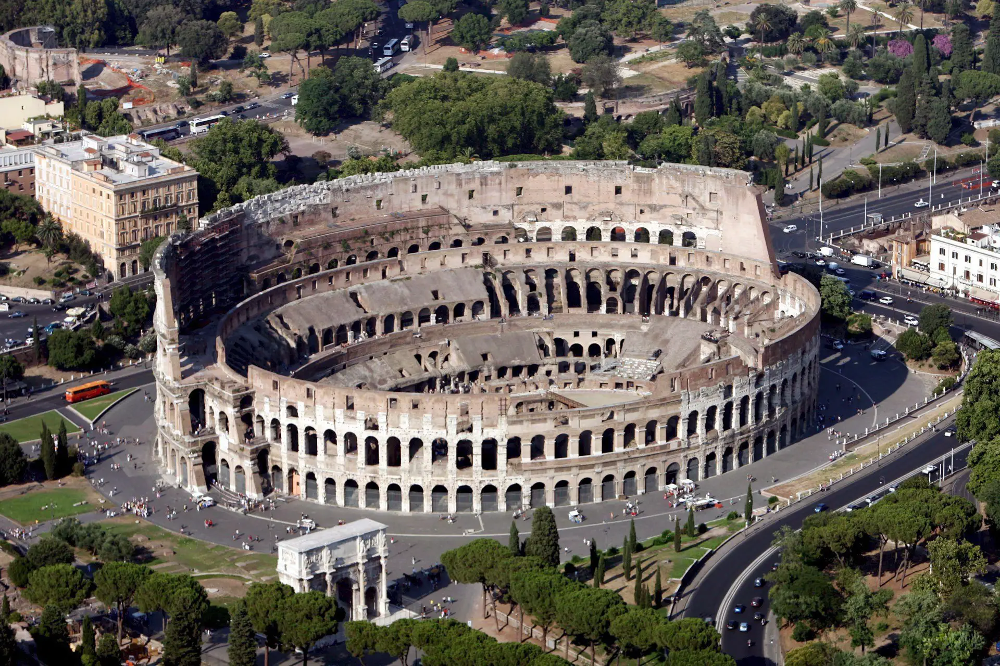

A Itália está localizada no sul da Europa, mais precisamente no centro-sul do continente.
A cultura da Itália é rica e cheia de tradições que refletem sua longa história e influência no mundo. O país foi berço do Império Romano e do Renascimento, períodos que moldaram a arte, a arquitetura e o pensamento ocidental.
A Itália é famosa por seus grandes artistas, como Leonardo da Vinci e
A língua italiana, derivada do Latim, é um elemento fundamental da identidade cultural do país. Em resumo, a cultura italiana é uma mistura vibrante de história, arte, gastronomia e costumes (Cuidado com a forma que você come algo lá na Itália, é um tipo de cultura deles de não ser necessário adicionar algo a mais em um prato feito) que continuam influenciando o mundo.
A culinária italiana é reconhecida mundialmente por sua variedade, sabor e simplicidade, valorizando ingredientes frescos e de qualidade. Cada região do país tem suas especialidades, como massas, que são a base de muitos pratos, além de pizzas, risotos, queijos e embutidos.
A cozinha italiana também destaca o uso de azeite de oliva, tomates, alho, ervas frescas e vinhos. Pratos famosos como lasanha, spaghetti alla carbonara e Tiramisu fazem parte da tradição. A comida italiana é muito ligada à família e ao convívio social, celebrando o prazer de comer bem e juntos.
A população da Itália em 2025 deverá ser de aproximadamente 59 milhões de habitantes. Os italianos são conhecidos por sua paixão, criatividade e forte senso de identidade regional. A maioria dos italianos é católica romana, embora a prática religiosa esteja em declínio entre os mais jovens.
- A Itália é mundialmente conhecida por sua moda e vestimentas, sendo um dos grandes centros da indústria fashion. O estilo italiano valoriza a elegância, o bom corte, a qualidade dos tecidos e a atenção aos detalhes. Cidades como Milão e Roma são referências globais em moda, abrigando marcas famosas como Gucci, Prada, Versace e Armani.
- O Vaticano, sede da Igreja Católica, é um país independente localizado dentro da cidade de Roma. É o menor país do mundo.
- A Itália é famosa por suas montadoras de carros esportivos de luxo como Ferrari, Lamborghini e Maserati, com sede na região da Emília-Romanha.
- Dentro da cidade de Roma, há um Coliseu, um dos monumentos mais antigos que existe, que foi construido quando o império romano existia.
